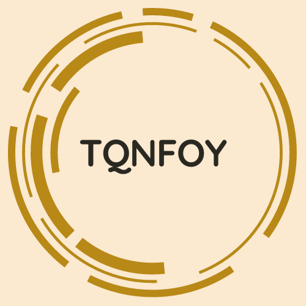
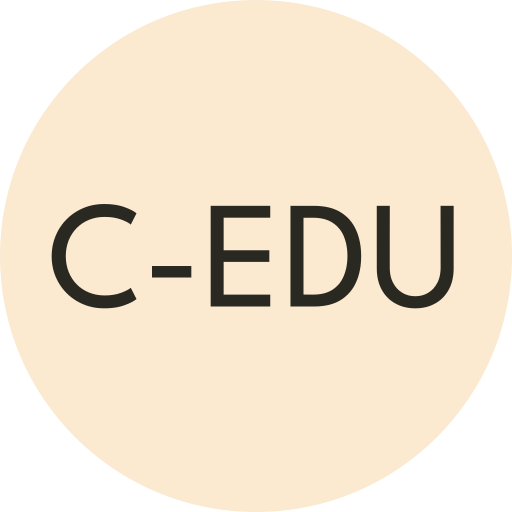

|  | Welcome to the official unofficial Cybertitan EDU training. In this website you will find many different tools and important learning tutorials to help you setup for competition. |
 |
Better known as Trying to Qualify for Nationals in One Year.
This page is for the newbies who haven't had previous years of experience. This gives a very simple explanation of how the cybertitan teams and competitions work.
This is page is the gold mine where I found Hybernova's blog that documents everything that we need to do. EVERYTHING.
This page is the whole content for this site. Each Chapter will explain a certain part of the proceedure that's recommended for you to learn and use during competition.
All the tools that you need to use in and out of competition. Practice images organized by round and generic tools are available.
I am a team captain at a Cybertitan program in Canada. I haven't qualified more Nationals and I want to finally step foot into the ring I have done minimal coding up until now where scripting and writing html and css has become a big part of what I do. On my team I compete with four others and I'm the Cisco person for our team! Hope you find this site useful! :>
:>